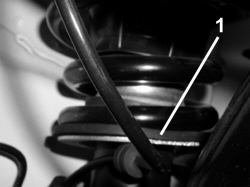

4410AB CHECKING RUBBER BLOCK AND BEARING ON FRONT SHOCK ABSORBER
- Path
- Test > 44 SUSPENSION AND WHEELS > 4410 FRONT SUSPENSION > 4410A FRONT DAMPERS AND SPRINGS > 4410AB CHECKING RUBBER BLOCK AND BEARING ON FRONT SHOCK ABSORBER
- Kind
- test / check procedure
- Applies to
- all engines; all production periods
- Interactive page
- https://sloeber94.github.io/elrnDB-aBrrSpdr/en/#/946001040
Applies to: all engines; all production periods
1. Check that the lower rubber mounting is present and correctly positioned.
